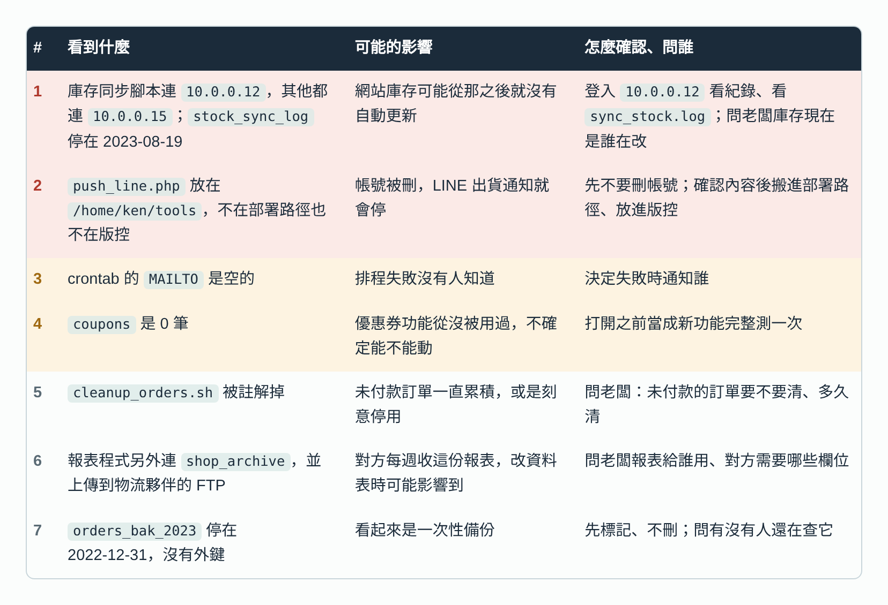

沒有文件的系統，一天內畫出它的樣子：先查設定檔、排程和資料庫，最後才讀程式碼
一家做訂製家具的小公司，官網接單、後台出貨，系統是幾年前請外包工程師做的。合約結束後，那位工程師就聯絡不上了。
新接手的工程師拿到三樣東西：正式主機的 SSH 帳號、資料庫帳號，和一份只有網站程式的 repo。沒有文件，程式裡幾乎沒有註解。
老闆的問題很實際：「下個月想把優惠券功能打開，順便改 LINE 出貨通知的文字。會動到哪些地方？先跟我說這套系統到底有哪些東西。」
以下的公司、主機、帳號、網址與時間都是虛構的示範情境；程式與 SQL 是在示範資料上實際執行的。
先別打開程式碼
直覺的做法是 clone 下來，從 Program.cs 或 index.php 一路往下讀。問題是程式碼回答的是「怎麼做」，而接手第一天要回答的是另外四件事：
- 系統由哪幾塊組成？
- 每一塊連到誰（資料庫、外部 API、檔案主機）？
- 什麼東西會在沒人操作的時候自己動？
- 資料庫裡哪些表還活著，彼此怎麼關聯？
這四件事都會在正式主機上留下痕跡：設定檔、排程、資料庫。讀它們比讀程式碼快得多，而且讀到的是「正式環境實際在跑的樣子」，不是 repo 裡某個版本的樣子。
這次的示範就是一個很典型的例子：repo 裡只有網站，但正式主機上還有一支每週跑的報表程式、兩支腳本，它們從來沒進過版控。

上午：把正式主機上的東西複製下來
原則只有一個：正式主機只讀不改。所有分析都在複製出來的資料夾上做。
要複製的是部署資料夾（不含 log 和使用者上傳的檔案），以及排程的設定。以 Linux 主機為例，大致是這幾個指令（示範情境沒有真的主機，以下指令沒有實際執行）：
# 未實際執行：在自己的電腦上，從正式主機拉一份下來
rsync -av --exclude='*.log' --exclude='uploads/' deploy@正式主機:/opt/shop/ ./legacy/
ssh deploy@正式主機 'crontab -l' > ./legacy/cron/crontab.txt
# crontab -l 只會列出目前這個帳號的排程，root 和其他帳號也要看
ssh deploy@正式主機 'sudo crontab -l -u root; ls /etc/cron.d; systemctl list-timers --all'
Windows 主機的排程在「工作排程器」，可以用 schtasks /query /fo csv /v 匯出成 CSV；用 SQL Server 的話，SQL Server Agent 的作業也是排程，存在 msdb 資料庫裡。（這兩項也沒有實際執行。）
複製下來的設定檔裡有資料庫密碼。這份資料夾要和正式環境一樣小心保管，不要放進 repo、不要貼到聊天群組或 AI 工具裡。
示範情境複製下來的資料夾長這樣：
$ find legacy -type f | sort
legacy/batch/ReportJob/ReportJob.exe
legacy/batch/ReportJob/ReportJob.exe.config
legacy/cron/crontab.txt
legacy/scripts/.env
legacy/scripts/cleanup_orders.sh
legacy/scripts/import_stock.php
legacy/scripts/sync_stock.sh
legacy/web/appsettings.Production.json
legacy/web/appsettings.json
三種設定檔格式：網站是 ASP.NET Core 的 appsettings.json，報表程式是 .NET Framework 的 .exe.config，腳本用 .env。一套系統用了三種寫法，通常代表它是不同時期、可能不同人一塊一塊加上去的。
設定檔與排程：它連到誰、什麼時候自己動
檔案不多的時候，一個一個打開看也可以。但設定檔一多，很容易漏看，也很難比對「這個檔案說資料庫在 A，那個檔案說在 B」。所以寫一支小程式來做這件事。
這支 .NET 8 主控台程式會：
- 讀
.json、.config、.env，找出連線字串、網址、網路磁碟路徑和 SMTP 主機，不輸出密碼。 - 知道
appsettings.Production.json會覆寫appsettings.json的同名設定，只留下實際生效的那一個，並把被覆寫的記進待確認。 - 讀 crontab，找出每個排程執行的程式，檢查它在不在部署路徑底下、有沒有被註解掉。
- 最後輸出一份 Mermaid 架構圖。
它只認得示範情境用到的格式，判斷規則也很粗略（例如用 Server= 判斷是不是連線字串）。拿到你的系統上用，要依實際的設定檔格式調整。
using System.Text;
using System.Text.Json;
using System.Text.RegularExpressions;
using System.Xml.Linq;
// 用法：dotnet run -- <資料夾> <正式主機上的部署路徑>
// 例如：dotnet run -- ./legacy /opt/shop
if (args.Length < 2) { Console.WriteLine("用法：SystemMap <資料夾> <部署路徑>"); return; }
var root = Path.GetFullPath(args[0]);
var deployRoot = args[1].TrimEnd('/');
var found = new List<Link>(); // 設定檔裡找到的「連到誰」
var jobs = new List<Job>(); // 排程
var notes = new List<string>(); // 待確認
foreach (var file in Directory.EnumerateFiles(root, "*", SearchOption.AllDirectories).Order())
{
var rel = Path.GetRelativePath(root, file).Replace('\\', '/');
var name = Path.GetFileName(file);
var comp = Path.GetDirectoryName(rel)!.Replace('\\', '/'); // 設定檔所在的資料夾，當成一個元件
if (name.EndsWith(".json"))
{
using var doc = JsonDocument.Parse(File.ReadAllText(file));
Walk(doc.RootElement, "", (key, value) => Classify(comp, rel, key, value));
}
else if (name.EndsWith(".config"))
{
var x = XDocument.Load(file);
foreach (var a in x.Descendants("connectionStrings").Elements("add"))
Classify(comp, rel, (string)a.Attribute("name")!, (string)a.Attribute("connectionString")!);
foreach (var a in x.Descendants("appSettings").Elements("add"))
Classify(comp, rel, (string)a.Attribute("key")!, (string)a.Attribute("value")!);
}
else if (name == ".env")
{
var env = File.ReadLines(file).Where(l => l.Contains('=') && !l.StartsWith('#'))
.Select(l => l.Split('=', 2)).ToDictionary(p => p[0].Trim(), p => p[1].Trim());
if (env.TryGetValue("DB_HOST", out var h))
found.Add(new(comp, rel, "DB_HOST", "資料庫", $"{h}/{env.GetValueOrDefault("DB_NAME", "?")}"));
foreach (var (k, v) in env.Where(e => !e.Key.StartsWith("DB_"))) Classify(comp, rel, k, v);
}
else if (name.StartsWith("crontab"))
{
foreach (var line in File.ReadLines(file))
{
if (Regex.IsMatch(line, "^MAILTO=\"?\"?$"))
notes.Add($"{rel}：MAILTO 是空的，排程失敗不會寄信給任何人");
var m = Regex.Match(line, @"^(#\s*)?((?:\S+\s+){4}\S+)\s+(.+)$");
if (!m.Success || !Regex.IsMatch(m.Groups[2].Value, @"^[\d*/,\-]")) continue;
var cmd = m.Groups[3].Value;
var target = Regex.Match(cmd, @"\S+\.(exe|php|sh|py|dll)\b").Value;
if (!target.Contains('/')) // 例如「cd /opt/shop/x && mono X.exe」
target = Regex.Match(cmd, @"cd\s+(\S+)").Groups[1].Value.TrimEnd('/') + "/" + target;
var inDeploy = target.StartsWith(deployRoot + "/");
var local = Path.Combine(root, target.Replace(deployRoot + "/", ""));
jobs.Add(new(m.Groups[2].Value, target, inDeploy ? Path.GetDirectoryName(Path.GetRelativePath(root, local))! : "",
m.Groups[1].Success, inDeploy, inDeploy && File.Exists(local)));
}
}
}
// .NET 的 appsettings.{環境}.json 會覆寫 appsettings.json 的同名設定
foreach (var o in found.Where(f => Regex.IsMatch(f.File, @"appsettings\.\w+\.json$")).ToList())
foreach (var b in found.Where(f => f.Comp == o.Comp && f.Key == o.Key && f.File.EndsWith("/appsettings.json")).ToList())
{
found.Remove(b);
notes.Add($"{b.File} 的 {b.Key} 指向 {b.Target}，但被 {Path.GetFileName(o.File)} 覆寫成 {o.Target}");
}
// 同一個資料庫名稱，出現在不同主機
foreach (var g in found.Where(f => f.Kind == "資料庫").GroupBy(f => f.Target.Split('/')[1]))
if (g.Select(f => f.Target).Distinct().Count() > 1)
notes.Add($"資料庫 {g.Key} 出現在不同主機：" + string.Join("、",
g.GroupBy(f => f.Target.Split('/')[0]).Select(h => $"{h.Key}（{string.Join("、", h.Select(f => f.Comp))}）")));
foreach (var j in jobs)
{
var name = Path.GetFileName(j.Program);
if (j.Disabled) notes.Add($"排程 {name} 被註解掉了：是停用，還是暫停後忘了打開？");
else if (!j.InDeploy) notes.Add($"排程 {name} 放在 {Path.GetDirectoryName(j.Program)}，不在 {deployRoot} 底下");
else if (!j.Exists) notes.Add($"排程 {name} 在資料夾裡找不到");
}
Console.WriteLine("== 設定檔：這些元件連到哪裡（密碼不輸出） ==");
foreach (var f in found) Console.WriteLine($"{Pad(f.Comp, 16)}{Pad(f.Kind, 9)}{Pad(f.Target, 32)}← {Path.GetFileName(f.File)} {f.Key}");
Console.WriteLine("\n== 排程 ==");
foreach (var j in jobs)
Console.WriteLine($"{Pad(j.Schedule, 14)}{Pad(j.Disabled ? "已註解" : "啟用", 8)}{j.Program}");
Console.WriteLine("\n== 待確認 ==");
for (int i = 0; i < notes.Count; i++) Console.WriteLine($"{i + 1}. {notes[i]}");
// 輸出 Mermaid：推得出來的畫實線，有疑問的畫虛線
var sb = new StringBuilder("flowchart LR\n");
var ids = new Dictionary<string, string>();
string Id(string s) => ids.TryGetValue(s, out var v) ? v : ids[s] = $"n{ids.Count + 1}";
string L(string s) => s.Replace("\\", "\\\u200B"); // 反斜線後面補一個零寬空白，免得 \n 被 Mermaid 當成換行
foreach (var f in found)
sb.AppendLine($" {Id(f.Comp)}[\"{L(f.Comp)}\"] --> {Id(f.Target)}[(\"{f.Kind}<br/>{L(f.Target)}\")]");
foreach (var j in jobs.Where(j => !j.Disabled)) // 排程放最後畫，版面比較不會交錯
{
var to = j.Exists ? j.Comp : j.Program;
sb.AppendLine($" cron([\"cron\"]) {(j.Exists ? "-->" : "-.->")}|\"{j.Schedule}\"| {Id(to)}[\"{L(to)}\"]");
if (!j.InDeploy) sb.AppendLine($" {Id(to)} -.-> {Id(to + "?")}[\"連到哪裡？<br/>檔案沒有複製到\"]");
}
File.WriteAllText(Path.Combine(root, "..", "system-map.mmd"), sb.ToString());
Console.WriteLine("\n已輸出 system-map.mmd");
// ---- 以下是輔助函式 ----
// 中文字在終端機佔兩格，用顯示寬度補空白才對得齊
string Pad(string s, int width) => s + new string(' ', Math.Max(1, width - s.Sum(c => c >= 0x2E80 ? 2 : 1)));
void Walk(JsonElement e, string path, Action<string, string> onString)
{
if (e.ValueKind == JsonValueKind.Object)
foreach (var p in e.EnumerateObject()) Walk(p.Value, path == "" ? p.Name : $"{path}:{p.Name}", onString);
else if (e.ValueKind == JsonValueKind.String) onString(path, e.GetString()!);
}
void Classify(string comp, string file, string key, string value)
{
if (Regex.IsMatch(value, @"(Server|Host|Data Source)=", RegexOptions.IgnoreCase))
{
var kv = value.Split(';', StringSplitOptions.RemoveEmptyEntries).Select(p => p.Split('=', 2))
.Where(p => p.Length == 2).ToDictionary(p => p[0].Trim().ToLower(), p => p[1].Trim());
var host = kv.GetValueOrDefault("server") ?? kv.GetValueOrDefault("host") ?? kv.GetValueOrDefault("data source");
found.Add(new(comp, file, key, "資料庫", $"{host}/{kv.GetValueOrDefault("database", "?")}"));
}
else if (Uri.TryCreate(value, UriKind.Absolute, out var u) && u.Scheme is "http" or "https" or "ftp")
{
if (key.EndsWith("NotifyUrl")) return; // 別人呼叫我們的網址，不是我們連出去
found.Add(new(comp, file, key, u.Scheme == "ftp" ? "FTP" : "API", u.Host));
}
else if (value.StartsWith(@"\\"))
found.Add(new(comp, file, key, "檔案分享", value.TrimEnd('\\')));
else if (key.EndsWith("Smtp:Host"))
found.Add(new(comp, file, key, "SMTP", value));
}
record Link(string Comp, string File, string Key, string Kind, string Target);
record Job(string Schedule, string Program, string Comp, bool Disabled, bool InDeploy, bool Exists);
在示範資料夾上執行（.NET SDK 8.0.134，Ubuntu 24.04）：
$ dotnet run --project SystemMap -- legacy /opt/shop
== 設定檔：這些元件連到哪裡（密碼不輸出） ==
batch/ReportJob 資料庫 10.0.0.15/shop ← ReportJob.exe.config Shop
batch/ReportJob 資料庫 10.0.0.15/shop_archive ← ReportJob.exe.config Archive
batch/ReportJob FTP ftp.partner-logistics.example ← ReportJob.exe.config UploadTarget
scripts 資料庫 10.0.0.12/shop ← .env DB_HOST
scripts API supplier-api.example ← .env SUPPLIER_API
web SMTP smtp.mailhost.example ← appsettings.json Smtp:Host
web API api.pay-gateway.example ← appsettings.json Payment:ApiBase
web 檔案分享 \\nas01\shop_uploads ← appsettings.json Upload:Root
web 資料庫 10.0.0.15/shop ← appsettings.Production.json ConnectionStrings:Default
== 排程 ==
30 2 * * * 啟用 /opt/shop/scripts/sync_stock.sh
0 7 * * 1 啟用 /opt/shop/batch/ReportJob/ReportJob.exe
*/10 * * * * 啟用 /home/ken/tools/push_line.php
0 3 * * * 已註解 /opt/shop/scripts/cleanup_orders.sh
== 待確認 ==
1. cron/crontab.txt：MAILTO 是空的，排程失敗不會寄信給任何人
2. web/appsettings.json 的 ConnectionStrings:Default 指向 10.0.0.12/shop，但被 appsettings.Production.json 覆寫成 10.0.0.15/shop
3. 資料庫 shop 出現在不同主機：10.0.0.15（batch/ReportJob、web）、10.0.0.12（scripts）
4. 排程 push_line.php 放在 /home/ken/tools，不在 /opt/shop 底下
5. 排程 cleanup_orders.sh 被註解掉了：是停用，還是暫停後忘了打開？
已輸出 system-map.mmd
輸出最有用的是最後的「待確認」。逐條看：
第 2、3 條：資料庫在哪一台？網站的 appsettings.json 寫的是 10.0.0.12，但正式環境的 appsettings.Production.json 把它覆寫成 10.0.0.15。報表程式也連 10.0.0.15。只有 scripts/.env 還寫著 10.0.0.12。
最可能的解釋是：系統搬過一次資料庫主機，網站和報表程式改了，腳本沒改。但這只是推測，現在還不知道 10.0.0.12 是否還開著。下午查資料庫時，會再找到一個線索。
另外要注意：ASP.NET Core 實際使用哪一份設定，取決於主機上的 ASPNETCORE_ENVIRONMENT（沒設定時預設是 Production）；而環境變數本身也能覆寫設定檔，例如 ConnectionStrings__Default。這支程式只讀檔案，主機上的環境變數、systemd 或 IIS 的設定要另外看。
第 4 條：排程跑的程式放在個人目錄。每 10 分鐘執行一次的 push_line.php 放在 /home/ken/tools，不在 /opt/shop 底下，所以 rsync 也不會複製到它。從檔名和頻率看，它很可能就是老闆想改文字的 LINE 出貨通知。
如果哪天有人整理主機、把前任工程師的帳號連同家目錄刪掉，這個通知就會停。在確認之前，那個帳號先不要刪。
第 1 條：MAILTO=""。cron 預設會把排程產生的輸出（包含錯誤訊息）寄給該帳號，前提是主機能寄信；設成空字串就是不寄。也就是說，上面任何一個排程失敗，都不會有人知道。
第 5 條：被註解掉的排程。cleanup_orders.sh 看名字是清理訂單。被註解掉，可能是刻意停用，也可能是某次出問題時暫停，之後忘了打開。這要問人，不能猜。
下午：資料庫裡哪些表還活著、誰跟誰有關
設定檔告訴我們系統連到 10.0.0.15 的 shop。接下來看裡面有什麼。
哪些表還活著
資料表的名稱看不出它還有沒有在用。比較可靠的方法是看兩件事：有幾筆資料，最新一筆是什麼時候。
一張一張查太慢，可以讓 MariaDB／MySQL 從 information_schema 產生查詢：每張表、每個日期欄位各產生一段 COUNT(*) 和 MAX()，用 UNION ALL 接起來。
SET SESSION group_concat_max_len = 1000000;
SELECT CONCAT(GROUP_CONCAT(
CONCAT('SELECT ''', t.TABLE_NAME, ''' AS table_name, ',
IFNULL(CONCAT('''', c.COLUMN_NAME, ''''), 'NULL'), ' AS date_column, ',
'COUNT(*) AS row_count, ',
IFNULL(CONCAT('MAX(`', c.COLUMN_NAME, '`)'), 'NULL'), ' AS latest ',
'FROM `', t.TABLE_NAME, '`')
ORDER BY t.TABLE_NAME, c.COLUMN_NAME SEPARATOR '\nUNION ALL '), ';')
FROM information_schema.TABLES t
LEFT JOIN information_schema.COLUMNS c
ON c.TABLE_SCHEMA = t.TABLE_SCHEMA AND c.TABLE_NAME = t.TABLE_NAME
AND c.DATA_TYPE IN ('date', 'datetime', 'timestamp')
WHERE t.TABLE_SCHEMA = 'shop' AND t.TABLE_TYPE = 'BASE TABLE';
先產生查詢，再執行它（MariaDB 10.11.14）：
$ mariadb -N -r shop < gen_activity.sql > activity.sql
$ head -3 activity.sql
SELECT 'coupons' AS table_name, 'created_at' AS date_column, COUNT(*) AS row_count, MAX(`created_at`) AS latest FROM `coupons`
UNION ALL SELECT 'customers' AS table_name, 'created_at' AS date_column, COUNT(*) AS row_count, MAX(`created_at`) AS latest FROM `customers`
UNION ALL SELECT 'line_push_queue' AS table_name, 'created_at' AS date_column, COUNT(*) AS row_count, MAX(`created_at`) AS latest FROM `line_push_queue`
$ mariadb --table shop < activity.sql
+-----------------+-------------+-----------+---------------------+
| table_name | date_column | row_count | latest |
+-----------------+-------------+-----------+---------------------+
| coupons | created_at | 0 | NULL |
| customers | created_at | 300 | 2026-11-21 00:00:00 |
| line_push_queue | created_at | 1500 | 2026-11-26 21:50:00 |
| line_push_queue | sent_at | 1500 | 2026-11-26 22:00:00 |
| orders | created_at | 4200 | 2026-11-26 21:47:00 |
| orders_bak_2023 | created_at | 1455 | 2022-12-31 21:00:00 |
| order_items | NULL | 9800 | NULL |
| products | updated_at | 80 | 2026-11-20 15:12:00 |
| stock_sync_log | run_at | 880 | 2023-08-19 02:30:00 |
+-----------------+-------------+-----------+---------------------+
COUNT(*) 在大資料表上會掃整張表。正式資料庫最好在離峰時段跑，或者在備份還原出來的資料庫上跑。
這張表可以讀出幾件事：
coupons是 0 筆。老闆想「打開」的優惠券功能，從來沒有人用過。資料表在，不代表功能是完整、測試過的；這要列進待確認，打開之前要當成新功能來測。orders_bak_2023停在 2022-12-31。看名字和日期，像是某次手動備份的訂單。它沒有在更新，但先不要刪，標記起來就好。order_items沒有日期欄位，看不出活不活著。這種表要看它跟誰關聯，下一段處理。stock_sync_log停在 2023-08-19。
最後這一條要和上午的結果放在一起看：寫這張紀錄的應該是每天凌晨 2:30 的 sync_stock.sh，而它的 .env 正好指向舊的 10.0.0.12。
products 的最新更新時間是最近的，看起來很正常。但 MAX() 只看最新一筆，再查一次「最後一次同步之後，有幾個商品被更新過」：
$ mariadb --table shop -e "SELECT COUNT(*) AS total, SUM(updated_at > '2023-08-19 02:30:00') AS updated_after_last_sync FROM products;"
+-------+-------------------------+
| total | updated_after_last_sync |
+-------+-------------------------+
| 80 | 3 |
+-------+-------------------------+
80 個商品裡只有 3 個在那之後被更新過，比較像是有人在後台手動改的。推測是：庫存同步從 2023 年 8 月起，可能一直寫到舊主機，或是一直在失敗；而 MAILTO 是空的，所以沒人收到通知。
這仍然是推測。要確認，得登入 10.0.0.12 看它還在不在、上面的 stock_sync_log 最後一筆是什麼時候，再看 /var/log/sync_stock.log。這些都列進待確認清單。
誰跟誰有關
外包做的系統常常沒有宣告外鍵（foreign key）。關聯只存在程式碼裡，資料庫本身看不出來。
不過欄位命名通常有規律：customer_id 大多指向 customers。下面這段 SQL 找出所有 _id 結尾的欄位，猜它指向哪張表，並標出有沒有宣告外鍵：
SELECT c.TABLE_NAME AS table_name, c.COLUMN_NAME AS column_name,
IFNULL(t.TABLE_NAME, '?') AS guessed_target,
IF(k.CONSTRAINT_NAME IS NULL, 'no', 'yes') AS has_fk
FROM information_schema.COLUMNS c
LEFT JOIN information_schema.TABLES t
ON t.TABLE_SCHEMA = c.TABLE_SCHEMA
AND t.TABLE_NAME = CONCAT(LEFT(c.COLUMN_NAME, CHAR_LENGTH(c.COLUMN_NAME) - 3), 's')
LEFT JOIN information_schema.KEY_COLUMN_USAGE k
ON k.TABLE_SCHEMA = c.TABLE_SCHEMA AND k.TABLE_NAME = c.TABLE_NAME
AND k.COLUMN_NAME = c.COLUMN_NAME AND k.REFERENCED_TABLE_NAME IS NOT NULL
WHERE c.TABLE_SCHEMA = 'shop' AND c.COLUMN_NAME LIKE '%\_id'
ORDER BY c.TABLE_NAME, c.COLUMN_NAME;
$ mariadb --table shop < find_relations.sql
+-----------------+-------------+----------------+--------+
| table_name | column_name | guessed_target | has_fk |
+-----------------+-------------+----------------+--------+
| line_push_queue | order_id | orders | no |
| orders | customer_id | customers | yes |
| orders_bak_2023 | customer_id | customers | no |
| order_items | order_id | orders | yes |
| order_items | product_id | products | no |
+-----------------+-------------+----------------+--------+
「加 s 變複數」的猜法很粗略：category_id 對不到 categories，就會顯示 ?，要人工補。猜出來的關聯也要驗證一次：拿資料去 JOIN，看有沒有對不到的。
SELECT 'order_items.product_id' AS guessed_relation, COUNT(*) AS rows_checked,
SUM(p.id IS NULL) AS not_found
FROM order_items oi LEFT JOIN products p ON p.id = oi.product_id
UNION ALL
SELECT 'line_push_queue.order_id', COUNT(*), SUM(o.id IS NULL)
FROM line_push_queue q LEFT JOIN orders o ON o.id = q.order_id;
$ mariadb --table shop < orphans.sql
+--------------------------+--------------+-----------+
| guessed_relation | rows_checked | not_found |
+--------------------------+--------------+-----------+
| order_items.product_id | 9800 | 0 |
| line_push_queue.order_id | 1500 | 0 |
+--------------------------+--------------+-----------+
全部對得上，這兩個猜測可以先當成成立。line_push_queue 每筆都對應一張訂單，最新一筆是昨晚，和上午找到的 push_line.php 對得起來：LINE 出貨通知很可能是「訂單出貨時寫一筆進 line_push_queue，排程每 10 分鐘撈出來發送」。要改通知文字，大概要改的是那支放在個人目錄、不在版控裡的 PHP。
SQL Server 也可以用同樣的思路查，sys.tables、sys.columns、sys.foreign_keys 分別對應上面用到的資訊。這部分本文沒有實際執行，就不附語法。
傍晚：畫成一張圖，附上待確認清單
掃描程式輸出的 system-map.mmd 直接就是一張 Mermaid 圖。下面這張沒有手動修改，是程式輸出的原樣：

只看這張圖就能回答老闆的第一個問題：系統有網站、每週報表、庫存同步三塊，加上一個藏在個人目錄的 LINE 通知；連到兩台資料庫主機、一個 NAS、一個 FTP、三個外部服務。
但圖只是一半。另一半是推不出來、必須問人的部分。這份清單比圖更重要，因為它決定下週改功能前要先處理什麼：

回到老闆的問題，答案變得很具體：
- 打開優惠券：資料表是空的，功能從沒被用過。要當成新功能來測，不是「打開開關」而已。
- 改 LINE 通知文字：要改的程式很可能不在 repo 裡，而是在前任工程師的個人目錄。先把它搬到部署路徑、放進版控，再改。
- 在這之前：先確認第 1 條。如果庫存真的三年多沒有自動同步，這比前兩件事都急。
這一天沒有修改任何東西，但下週要改功能時，已經知道會碰到哪裡、哪些地方要先問清楚。
本文的 C# 掃描程式（.NET SDK 8.0.134，Ubuntu 24.04）與 MariaDB 10.11.14 上的四段 SQL 都實際執行過，文中的輸出與實際輸出相同；示範資料夾與資料庫是另外寫程式產生的，不是真實系統。從正式主機複製檔案的指令、Windows 工作排程器與 SQL Server 相關的部分沒有實際執行。
學到什麼
- 接手第一天要回答的是「有什麼、連到誰、什麼時候自己動、哪些還活著」。這些答案在設定檔、排程和資料庫裡，比讀程式碼快。
- 以正式主機為準，不以 repo 為準。沒進版控的排程與腳本，往往就是最重要、也最危險的那一塊。
- 設定檔要看「實際生效」的那一份：環境專屬的設定檔、環境變數都可能覆寫預設值。
- 看資料表有沒有在用，看筆數和最新一筆的時間；只看
MAX()會被少數幾筆手動修改騙過。 - 推得出來的畫成圖，推不出來的列成清單去問人。清單比圖更重要。
如果你手上也有一套前任工程師聯絡不上、沒有文件的系統，問達工作室可以先替它做一次這樣的盤點，讓你在動手改之前，知道它到底長什麼樣子。